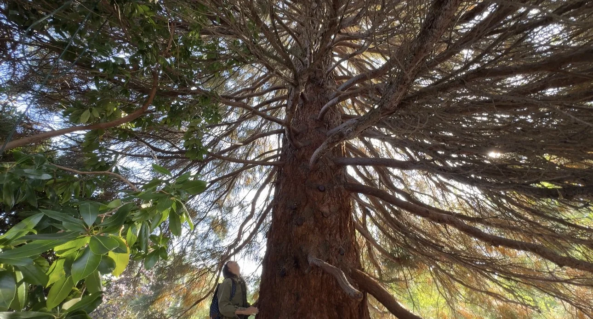

Roots
Past
What came before: old patterns, inherited stories, and burdens still being held.
A private spiritual reading, rooted in nature
Before you meet, Patti visits a living tree chosen for your reading, listens for its message, and prepares it to share with you privately.
Private · Personal · Prepared with care
An intentional pause
Your Tree Message is a pause from the noise: space to breathe, listen, and notice what may be ready to change.
Before you and Patti meet, she goes outside and visits a real tree on your behalf. The experience is prepared privately for one person, then shared with care in a live conversation.
Meet Kela
Kela is the name the trees collectively gave to Patti: not one tree, but roots, trunks, branches, and voices woven together across the Earth and beyond.
The name carries a remarkable echo in Hebrew. Kela can refer to a woven curtain or boundary around sacred space; related meanings include braiding strands together and directing something toward its target. For Patti, those meanings resonate with how Kela feels: collective, protective, and purposeful.
Every tree holds a different note within Kela.
How your message is received
Patti enters Spirit Mode with the tree as the tuning fork—settling the everyday noise and listening for what Kela wants you to know.
Share one question, a burden, a decision, or simply your openness to receive.
Patti selects and visits a living tree locally, specifically for your reading.
The tree becomes the tuning fork as Patti receives words, images, and impressions.
You meet privately with Patti to hear the reading and explore what came through.

A living view of time
Roots
What came before: old patterns, inherited stories, and burdens still being held.
Trunk
What is here now: your strength, your boundaries, and what needs your attention.
Branches
What is still becoming: possible directions, fresh growth, and your next step.
The trees do not dictate your future. They show you where new branches are possible.
A private, one-to-one experience
A tree visited for you. A message received for you. A live reading with Tree Medium Patti.
Prepared tree message · 45-minute private conversation

Meet your Tree Medium
I listen to trees. Not as scenery or symbols, but as living spiritual presences with something to say.
The trees collectively gave me the name Kela. In each reading, I visit one living tree for one person, enter Spirit Mode, and bring back the message that is ready for them.
Come curious
No. You may bring one question or intention, but you can also arrive open to what the tree wants you to know.
No. Patti visits the tree privately on your behalf, prepares the message, and then meets with you live by video.
Patti selects a tree locally for each reading. Requested trees, parks, species, or travel destinations are not part of the initial service.
The reading may illuminate patterns, possibilities, and next steps, but it does not promise fixed predictions or guaranteed outcomes. The tree tunes; it does not dictate.
No. Tree Messages are spiritual guidance and personal reflection. They are not a substitute for medical, mental-health, legal, financial, crisis, or emergency support.
Patti may adjust a visit for weather, access, environmental conditions, or personal safety. If timing changes, you will be contacted before the live session.
Your invitation
Your personal Tree Message includes Patti’s tree visit, prepared reading, and a private 45-minute live conversation. When you feel ready, choose “Book with Patti” from the blossom menu at the top of the page to continue to the next step.
Questions before booking? Email PattiBook with Patti
Patti visits one living tree for you, prepares its message, and shares it with you in a private 45-minute Zoom conversation.
Your Tree Message
Prepared tree message · 45-minute private Zoom conversationSecure payment is handled by Stripe. After payment, you’ll choose your appointment time.